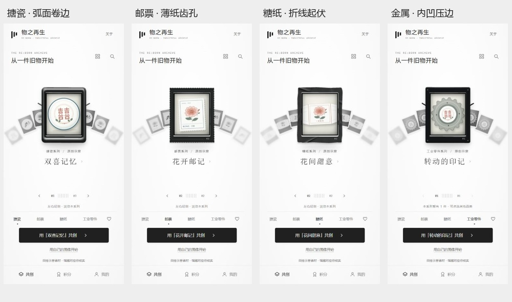

物之再生 · 固定玻璃、照片抽入与两端景深
2026-10-30 / v12 / 持续迭代的手机 H5 原型，尚非最终方案。
本轮修改
重新检查用户提供的视频 1.25–2.15 秒片段：旧照片倾斜抽离并下沉，下一张从侧下方抬入，玻璃亮斑保持在前方；端部侧卡淡出并失焦。本轮依此调整，保留中央彩色、左右各三张和当前品类内循环。
- 框内改为固定玻璃层叠加两张独立照片，包含斜向位移、前后透视、轻微失焦与明暗变化。拖动实时引入下一张，短拖松手回弹；连续换片从当前呈现姿态交接。
- 侧卡从近至远透明度为 0.83 / 0.58 / 0.23，模糊为 0 / 0.7 / 2.12px，过渡中同步变化。
- 侧卡保留左右各三张，相邻中心间距为 44 个设计单位。循环队列使用 7 个槽位，中央槽位隐藏；仍只浏览当前品类。重复展示本系列已有图像，计数保持实际条目数。
- 四类外框使用 Three.js 程序模型替换 CSS 贴片：暗釉搪瓷采用连续弧面卷边并降低刺眼高光；邮票采用细齿孔、薄纸层和低浮雕纹理；糖纸改为沿折线起伏的薄片；金属增加内凹压边并保留小型螺钉。整体保持暗色，不自动旋转。
- 中央卡片恢复原有彩色图案，配暖纸色背景；两侧卡片保留灰阶以突出当前选择。中央点击、滑动、文字环绕、共创入口与既有保存流程保留。

浏览器实际动效记录
实现与性能边界
Three.js 0.186.1 本地打包，使用程序几何、程序纹理和环境光，无远程模型、贴图、字体或接口。静止时停止重绘；拖动仅触发小幅姿态响应。像素倍率上限为 2，同一渲染器重复使用，换品类释放旧几何、材质和纹理。离开首页取消动画，页面卸载释放渲染器；初始化失败保留轻量 CSS 外框及全部操作。
模型源码在 source/frame3d.js；运行模块在 prototype/frame3d.js。修改模型后执行 npm ci、npm run build:frame、npm run build。预打包源码与单文件可直接运行，无需安装依赖。物理釉层与色彩处理依据 Three.js 材质文档及色彩管理说明。
实际验证
- 25 项测试通过；队列测试更新为左右各三张，保留分类循环、存储事务失败恢复与积分防重测试。
- 10 个 JavaScript 运行模块、3 份 CSS 的语法、结构和资源引用检查通过，Three.js 源码成功打包。
- 四品类均为 7 个槽位，计数对应 3 / 2 / 2 / 1 个实际条目。真实拖动从搪瓷喜鹊切至牡丹，没有跨类别；小幅拖动回弹后仅保留原卡，完整反向滑动和快速连续切换后卡片、标题与主入口对应，旧画面与文字层均清理至 1 个；点击中央图案进入详情，返回后模型正常恢复。
- 本轮四类模型的几何体数量分别为 6 / 5 / 2 / 14，纹理数量稳定在 2 / 3 / 3 / 3；静止期间渲染次数不再增长。最高模型约 2.1 万三角面。以上是资源检查，不代表手机帧率测试。
- 320×640、375×812、390×844、430×932：首页无纵向滚动，六张侧卡、文字、翻页与共创按钮保留在一屏内。
- 单文件通过本机 HTTP 实测，包含 Three.js 模型且没有外链脚本或样式。未发现 JavaScript 运行错误；本机图形驱动有不影响渲染的着色器浮点精度警告。
仍需真机 Safari / 微信 WebView 验证性能、WebGL 兼容性、系统减少动态效果、file:// 存储和多窗口并发编辑。当前尺寸检查在桌面浏览器进行。
业务边界
共创仍为主线：选择物件 → 编辑 → 自动保存草稿 → 命名保存 → 我的作品；投稿、积分与文化权益为辅助分支。IndexedDB schema 6 和既有作品记录结构不变。素材为原创示意，不是已核实馆藏；投稿与积分为本地演示，没有实际发送馆方、云审核、正式权益或生产确认。
单文件原型 · 源码入口 · 运行说明 · Three.js 许可证